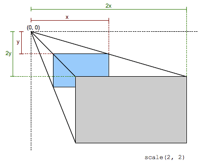

The scale() CSS function defines a transformation that resizes an element on the 2D
plane. Because the amount of scaling is defined by a vector, it can resize the horizontal and vertical dimensions at
different scales. Its result is a {{cssxref("<transform-function>")}} data type.

This scaling transformation is characterized by a two-dimensional vector. Its coordinates define how much scaling is done in each direction. If both coordinates are equal, the scaling is uniform (isotropic) and the aspect ratio of the element is preserved (this is a homothetic transformation).
When a coordinate value is outside the [-1, 1] range, the element grows along that dimension; when inside, it shrinks. If it is negative, the result a point reflection in that dimension. A value of 1 has no effect.
scale() function only scales in 2D. To scale in 3D, use
scale3d() instead.
The scale() function is specified with either one or two values, which represent the amount of scaling
to be applied in each direction.
scale(sx) scale(sx, sy)
sxsysx, resulting in a uniform scaling that preserves the element's aspect ratio.| Cartesian coordinates on ℝ2 | Homogeneous coordinates on ℝℙ2 | Cartesian coordinates on ℝ3 | Homogeneous coordinates on ℝℙ3 |
|---|---|---|---|
[sx 0 0 sy 0 0] |
Scaling/zooming animations are problematic for accessibility, as they are a common trigger for certain types of migraine. If you need to include such animations on your website, you should provide a control to allow users to turn off animations, preferably site-wide.
Also, consider making use of the {{cssxref("@media/prefers-reduced-motion", "prefers-reduced-motion")}} media feature — use it to write a media query that will turn off animations if the user has reduced animation specified in their system preferences.
Find out more:
<div>Normal</div> <div class="scaled">Scaled</div>
div {
width: 80px;
height: 80px;
background-color: skyblue;
}
.scaled {
transform: scale(0.7); /* Equal to scaleX(0.7) scaleY(0.7) */
background-color: pink;
}
{{EmbedLiveSample("Scaling_the_X_and_Y_dimensions_together", "200", "200")}}
<div>Normal</div> <div class="scaled">Scaled</div>
div {
width: 80px;
height: 80px;
background-color: skyblue;
}
.scaled {
transform: scale(2, 0.5); /* Equal to scaleX(2) scaleY(0.5) */
transform-origin: left;
background-color: pink;
}
{{EmbedLiveSample("Scaling_X_and_Y_dimensions_separately_and_translating_the_origin", "200", "200")}}
{{Compat}}